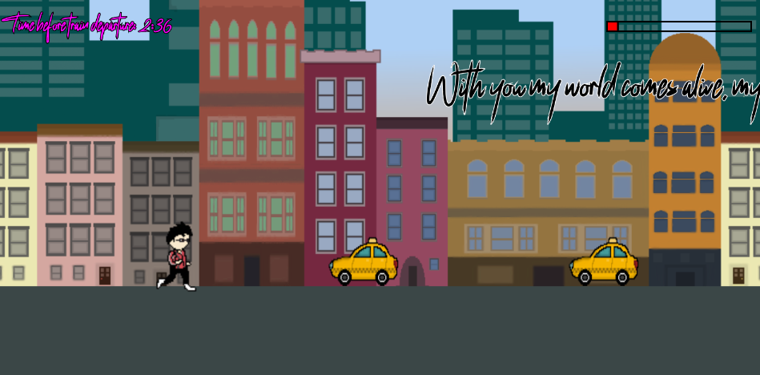
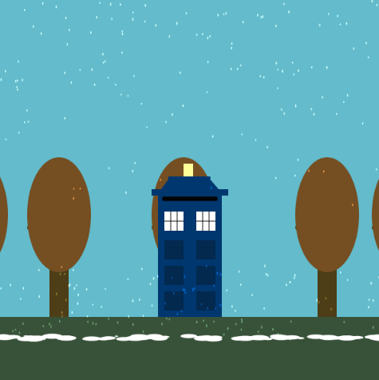

Hi, I'm Kenny
A creative coder exploring p5.js
About
I've been coding for over seven years, programming in a wide array of languages. I have always been fascinated by the creative application and potential of coding, and I feel this is something that p5.js acts as a gateway for.
Featured Sketches

Autobiographical Game
Dive into aspects of my personality
*HIGHLY recommended to play on fullscreen with laptop

Data Portrait
A virtual iPod loaded with my Spotify history

Experimental Clock
An animation of the changing seasons